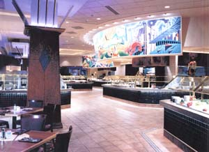
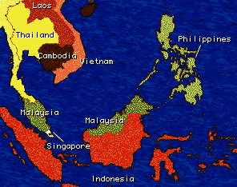
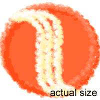

Mystic Feast Last Night I Met Up With
Mystic Feast Last night I met up with Danny, Will and David at Mystic Lake for their seafood buffet. Ahh yes, the seafood buffet, I hadn't been there in about 3 months. But it hasn't changed much. The lines are still packed with the HSEA (Hungry South East Asians) crowd waiting to ravage their crab legs, mussels, and raw oyesters. And once again, I saw people there that I knew, my old cook and Becky. The line wasn't bad because when I got there, my boys didn't wait for me and had already gotten in line so I just acted like a bastard and cut infront of those other people. (Geez, don't you hate it when people do that to you? I know I do.) This is a longer blog, so you have the option to jump to: HSEAs vs. FBWC (battle of the mean and hungry) The food review (winners and losers, okay mostly losers)

Our short wait in line was also contributed to the drama that occurred between some members of the HSEA and the FBWC (Fat Black Women Coalition). We were reminded of the bitter rivalry when one of the HSEAs (notorious for their skills in cutting infront of 90% of all people) tried to cut infront of a gang of the FBWC. She made the mistake of brushing aside a decendent of the FBWC without saying the words that the American society lives by, "excuse me".
One of the stronger members of the FBWC morphed into her super-hungry-"oh no you didnt"-Gorilla form. And then just as the line-cutter realized what she had provoked and was in the process of retreating, another member of the HSEA stepped in to try and stand up for his gang member. The quiet but brave (and much smaller) asian man could be seen (but not heard) telling the gorilla to back off and kept pointing fingers at the beast. This provoked the hungry beast even more and she could be heard throughout the entire casino and probably all across the Mdewakanton Indian reservation as she yelled at the little asian man for alegedly touching her. Fuelled by the rage from the hunger pangs, both representatives from each gang would not back down. Until finally, the line security personel came by and threatened to throw both the HSEA group and the FBWC out. So the food was just "okay" again. I didn't pig out and try to eat them out of business like I used to. I don't know what's wrong with me but I just get full too fast, maybe I'm losing some of my asian eating powers. But anyways heres my food review. Snow Crab legs: 5/10 The crab legs were okay but the consistency was again lacking. I only gave it 5 out of 10 because I only got crab legs that could crack correctly half the time. And most of the time I stole the crab from David, maybe he was living up to his asian eating gods by taking all the good crabs right when they came out. Mussels: 6/10 These little babies weren't as little as last time. However I think I've been spoiled by the mussels at McCormick and Smick's. They weren't very juicy or succulent, they were just bigger and older. Not to mention the amount of sand that was in them. In fact, while waiting to get some, the amigo infront of me who was adopting the asian seafood buffet strategy showed me a rock that he picked up. A rock, the side of a mussel was scooped up, talk about not cleaning your seafood! Raw Oyester bar: 2/10 Ok, I admit I've been spoiled by the fresh raw oyesters I had in Baltimore but these just don't cut it anymore. I litterally ate 2 oyesters. The first one tasted like oyester shit, and the second one I ate to double-check. Yep, they suck. Sushi bar: 1/10 Ok do I even have to talk about this? I mean c'mon, seriously, you still think you're making sushi??? Mystic Lake should go look up the definition of sushi. Until then, if you want a sushi buffet, go to Ichiban. Thai Fish Cakes: 9/10

These little hidden gems were tucked away in the far corner of the buffet. Boy I'm glad when I discovered these babies. They were bite size (perfect for asians) salmon fish cakes topped with some sweet Thai sauce. They actually had taste and the texture was nice and soft. Highly recommended! Yeah well that's all there is to mention about the $21.25 Mystic Lake Wednesday night seafood buffet. Sad isn't it?